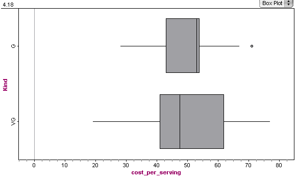

The mean is 2118.71 and the median is 1688. The median is a better measure of center as you can see (I graphed it) that the distribution is skew right. The mean is so much higher than the median due to this skewness.
Multiplying the caffeine in 4.2 by 8 we see that the mean for energy drinks is 77 mg per cup, and for coffee the mean is 125.417. Comparing median we have 76.4 for energy drinks and 122.5 for coffee. By both measures it is clear a cup of coffee has more caffeine than a cup of energy drink. I think that typical portion size should also be taken into account as I imagine energy drinks are sold in larger portions that coffees.
Both distributions are have approximately the same mean. There medians differ because the good cereal has a skew left distribution and the very good cereal has a somewhat (slightly) skew right distribution. Their resepective medians are close at 53 and 47.5 respectively. What differs more dramatically is the spread of the distribution. The IQR for the good cereal is 11 while that of the very good cereal is 21, which is nearly double. This is also reflected in the standard deviations which are 14.577 and 19.6265, respectively. The standard deviation for good is large due to the outlier in that data. Thus, obscuring how different the spread of the two data sets is. Here are the box plots for the two distributions: 
The high-caffeine group of drinks is more variable by both measures of spread. The IQR is 16.3 versus 0.95 for the top-selling group. The standard deviation is 8.311 versus 0.667 for the top-selling group.